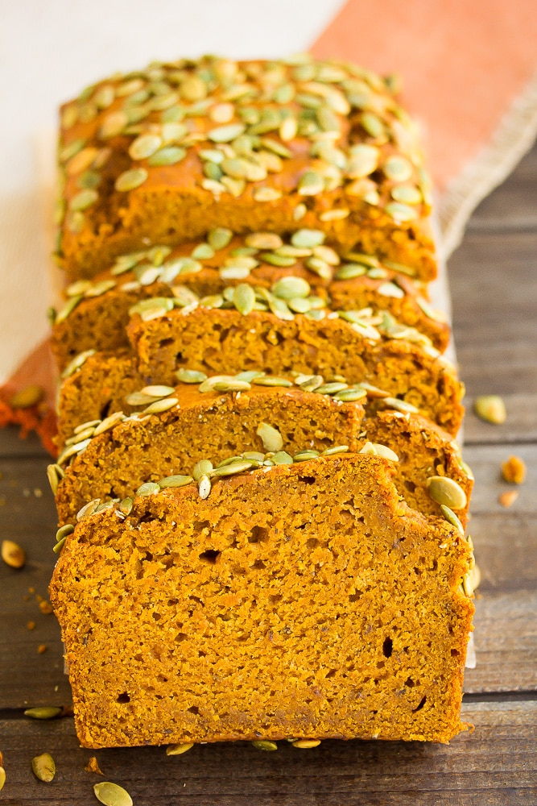

The best vegan dessert for fall
Fall has always been my favorite season. I love the colors, food, and extra time to express my gratitude. This vegan pumpkin bread is my go-to for the month of October, and is a huge hit with my family and friends. I highly reccomend you give it a go, as it is only a few simple ingredients and takes less than 10 minutes to prep
Prep Time: 10 min Cook Time: 45 min at 350 degrees
I know it is tempting to eat it right out the oven, but this recipe can be a bit crumbly when hot. I highly recommend letting it sit for at least 20 minutes before slicing.